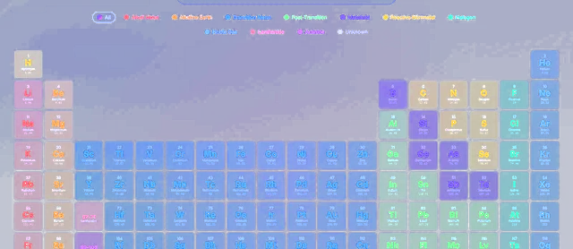
See chemistry in motion
Explore all 118 elements, build molecules, and simulate reactions, titrations and crystals, right in your browser.
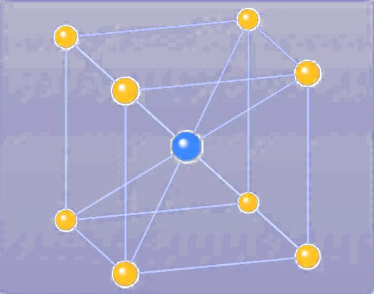
Turn any lattice in 3D
Drag to rotate simple cubic, body-centred, face-centred, hexagonal close-packed and diamond cells, with coordination number, atoms per cell and packing efficiency beside each one.
BCC · 8 neighbours · 68.0% packing- interactive tools
- 10
- elements in the dataset
- 118
- reaction mechanisms
- 6
- crystal lattices
- 5
Every tool, hands on
Each module is self-contained and runs in your browser. Pick one and start experimenting.
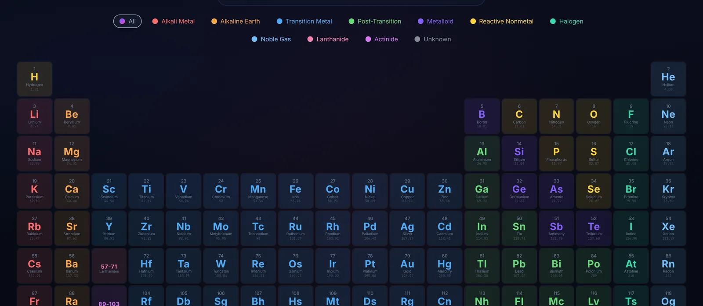
118 elements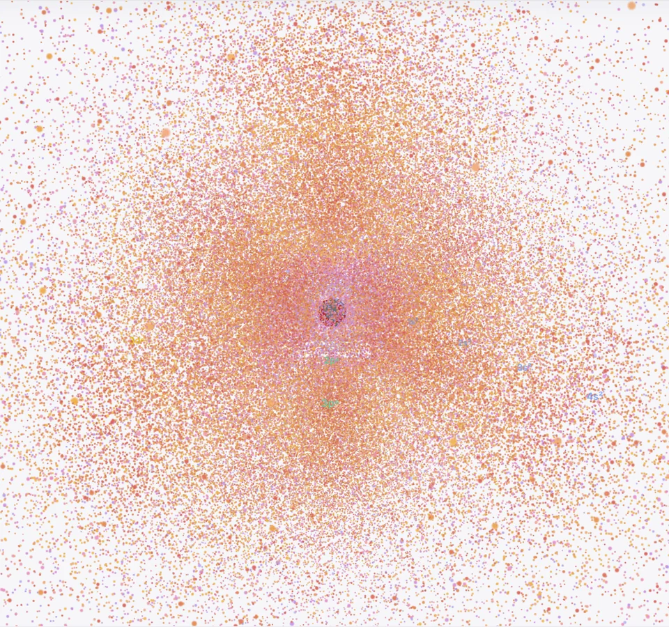
s · p · d · f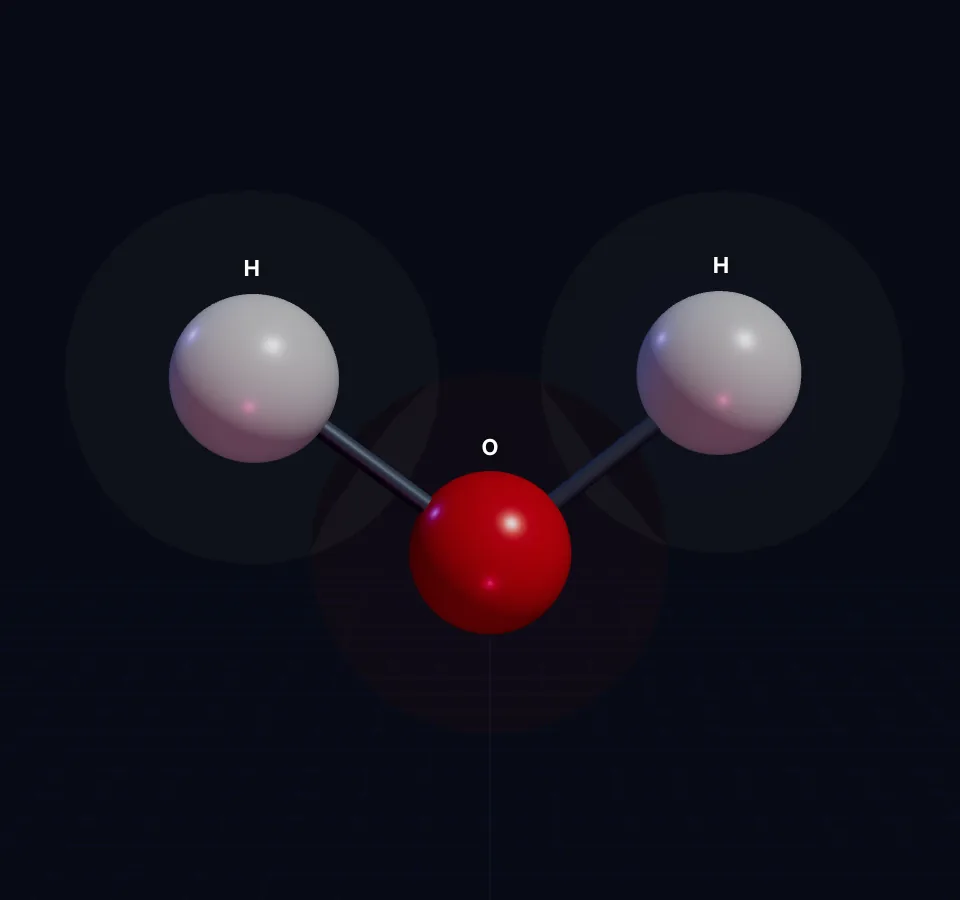
Ball & stick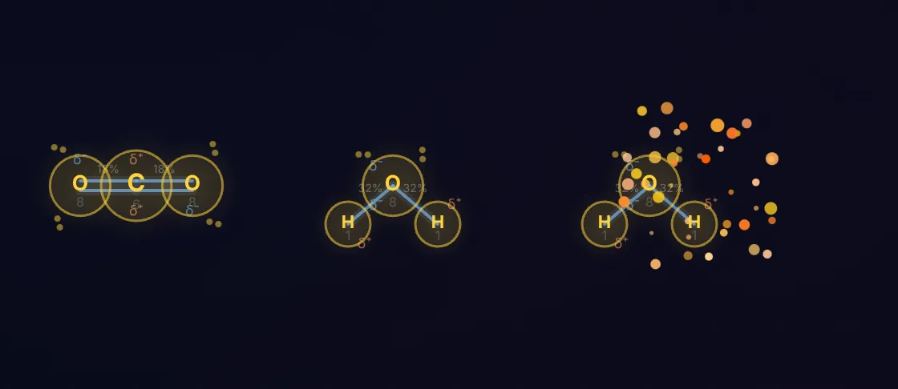
ΔH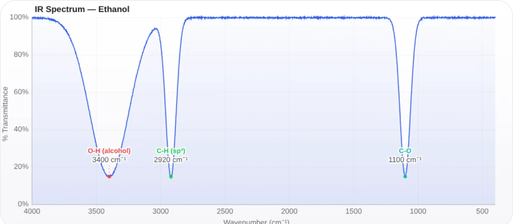
IR · UV-Vis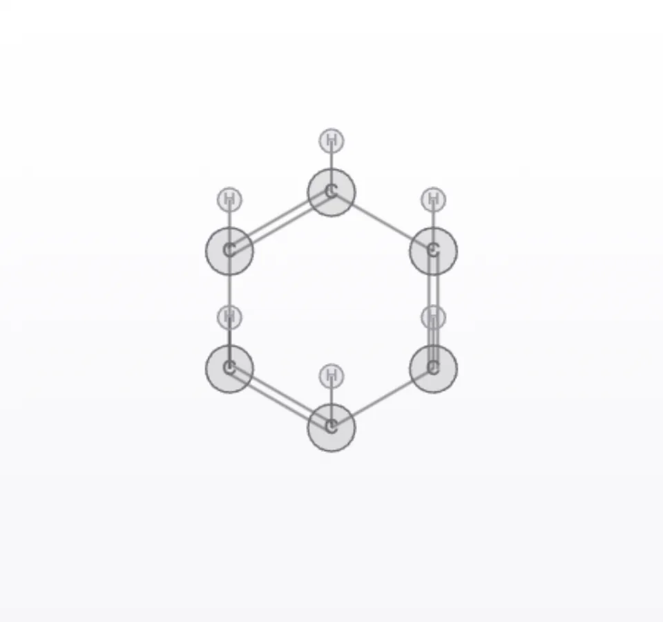
IUPAC names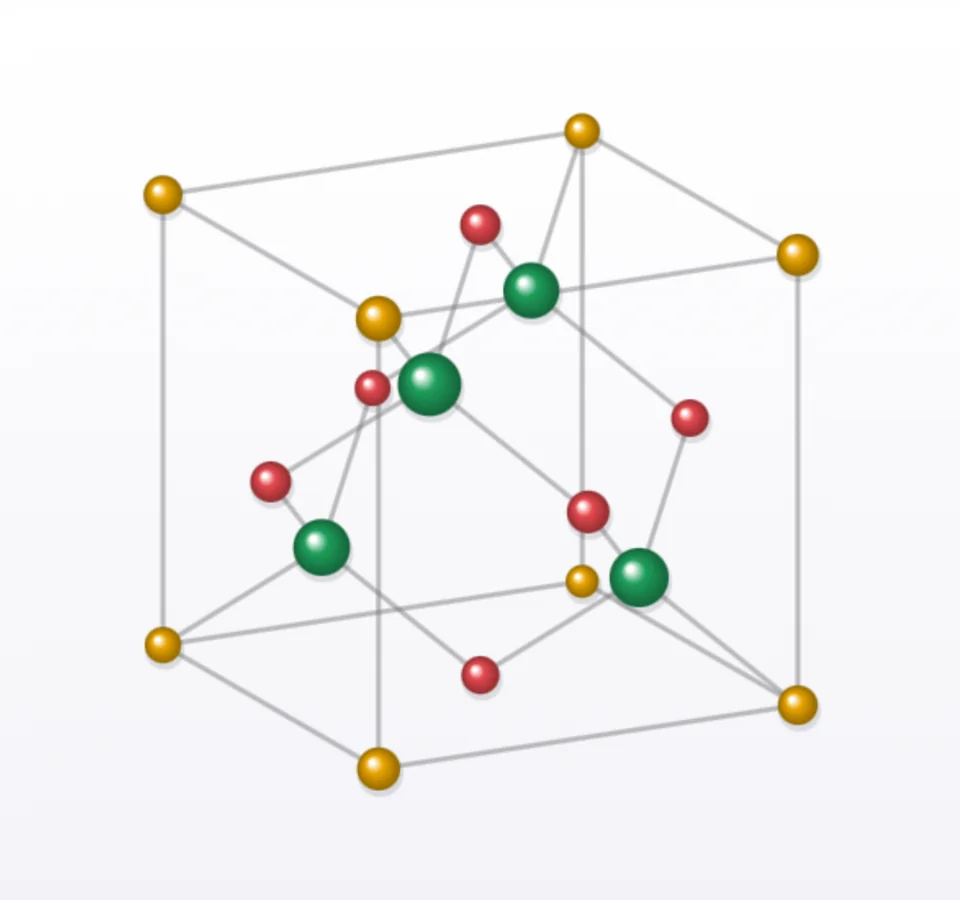
5 lattices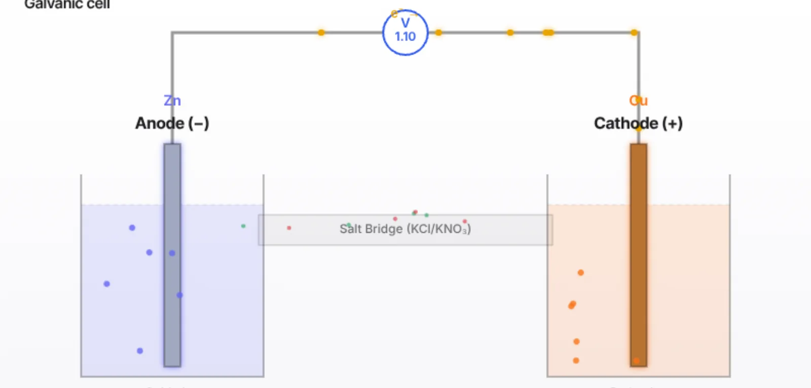
Nernst equation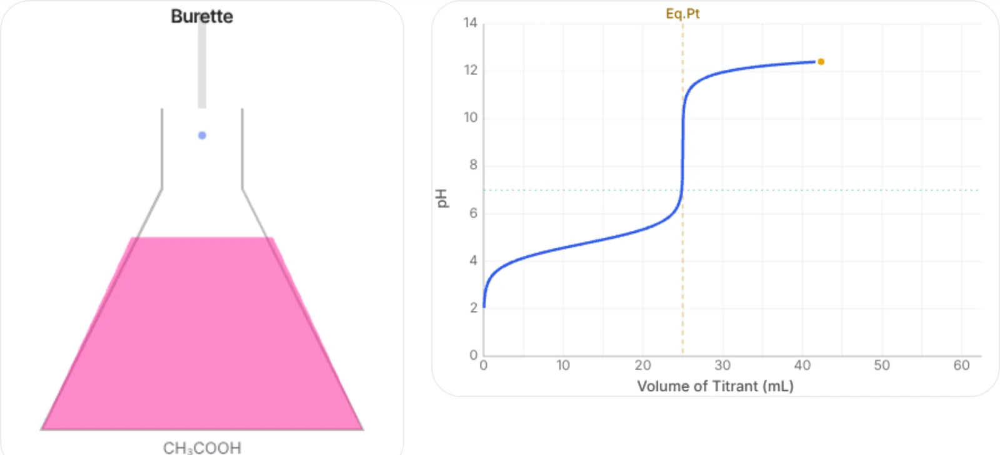
pH curve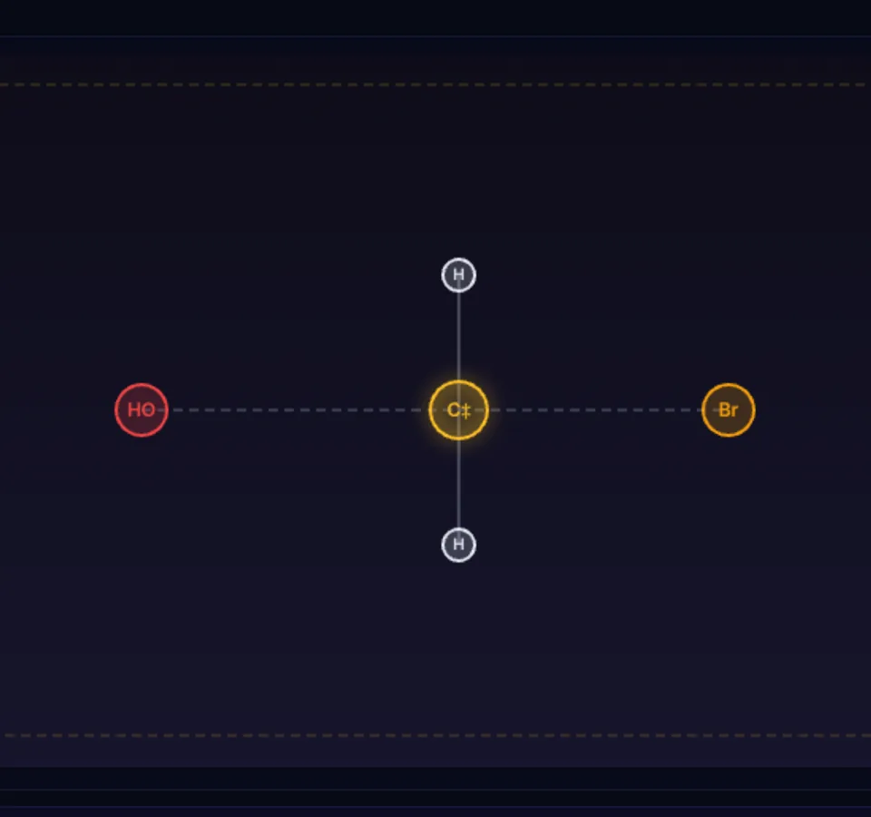
SN1 · SN2 · E1 · E2Draw it. Read its name.
Place carbon chains and functional groups on the canvas, and the builder generates the IUPAC name, molecular formula and weight as you draw.
Open the Organic Builder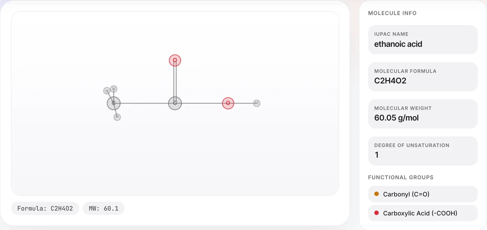
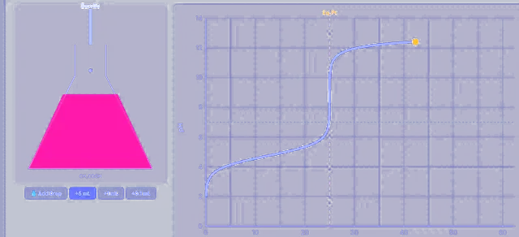
Built to run wherever you open a browser
No framework, no bundler and no server. The same plain files power every tool.
Orbital clouds are sampled from hydrogen-like wavefunctions, so each shape is computed, not drawn.
Every calculation runs in your browser, with no backend to set up.
Read, fork and change every line on GitHub.
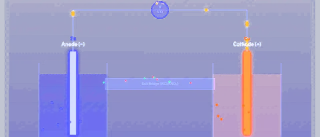
Start exploring
Open any tool and try it. There is nothing to install and nothing to sign up for.
Browse the toolsFind your starting point
Three groups, ten tools. Begin with whichever matches your question.
-
01
Fundamentals
Look up all 118 elements, see their orbitals and simulate IR and UV-Vis spectra.
Open the periodic table -
02
Build & React
Draw organic molecules, turn them in 3D and mix reagents in the Reaction Lab.
Open the Organic Builder -
03
Simulations
Run titrations, build galvanic cells, step through mechanisms and rotate crystal lattices.
Open the Titration Simulator
Run it on your own machine
Clone the repository and serve it with any static server, then open localhost:8080. No build step is needed.
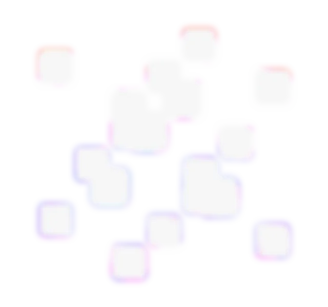
$ git clone https://github.com/StativeSh/atoms.git$ cd atoms$ python3 -m http.server 8080